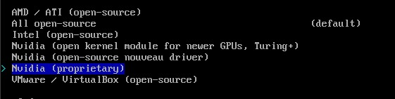

I use arch btw
Aku ingin nunjukin cara install Arch Linux, so that you can flex your neofetch in r/linux
Warning
Saya anggap orang yang ingin install Arch Linux sudah tau cara menggunakan Terminal dan memahami cara untuk install ulang Sistem Operasi
Ada dua metode untuk mendapatkan koneksi internet, yaitu melalui Ethernet atau WiFi. Untuk Ethernet tidak perlu setup tambahan dan hanya perlu dicolokkan ke port Ethernet, namun jika menggunakan WiFi perlu konfigurasi manual menggunakan iwctl
root@archiso / # iwctl
[iwd]# device list
Maka akan keluar daftar device Wireless yang ada di komputer, biasanya wlanX atau wlpNsX
Devices *
--------------------------------------------------------------------------------
Name Address Powered Adapter Mode
--------------------------------------------------------------------------------
wlan0 00:00:00:00:00:00 on phy0 station
Kita bisa melihat jaringan yang ada disekitar dengan
[iwd]# station wlan0 scan
[iwd]# station wlan0 get-networks
--------------------------------------------------------------------------------
Network name Security Signal
--------------------------------------------------------------------------------
NamaWiFiMu psk ****
Kemudian kita bisa masuk ke jaringan
[iwd]# station wlan0 connect NamaWiFiMu
Bila diminta password, maka masukkan saja.
Kemudian keluar dari iwctl
[iwd]# exit
Untuk mengecek apakah berhasil terkoneksi bisa dicek menggunakan ping
root@archiso / # ping archlinux.org
PING archlinux.org (95.217.163.246) 56(84) bytes of data.
64 bytes from archlinux.org (95.217.163.246): icmp_seq=1 ttl=52 time=226 ms
64 bytes from archlinux.org (95.217.163.246): icmp_seq=2 ttl=52 time=215 ms
64 bytes from archlinux.org (95.217.163.246): icmp_seq=3 ttl=52 time=246 ms
Done, dan bisa dilanjutkan ke tahap selanjutnya
Setelah komputer boot ke Terminal dan mendapatkan akses internet, proses instalasi dimulai dengan menjalankan perintah archinstall
root@archiso / # archinstall
Note
Gunakan arrow keys di keyboard untuk navigasi menu, Spasi untuk memilih opsi, Enter untuk konfirmasi
Di Menu Mirror and repositories, pilih Select regions dan pilih Indonesia kemudian Enter dan Back

Danger
Partisi NTFS tidak bisa diformat di Linux, bila ingin menggunakan partisi NTFS yang kosong tolong hapus partisinya menggunakan Disk Management di Windows terlebih dahulu
Kemudian di Menu Disk configurations, pilih Partitioning. Kalian akan diberikan 3 Opsi Use a best-effort default partition layout, Manual Partitioning, dan Pre-mounted configuration. Jika kalian memilih untuk menggunakan 1 OS saja, maka pilihlah opsi pertama. Jika ingin dual-boot, pilihlah opsi kedua.
Kita akan menggunakan Manual Partitioning, karena bisa atur ukuran partisi sendiri.

Pilih Storage device untuk instalasi Arch

Select yang free kemudian Enter

Partisi yang pertama adalah /boot, masukkan ukuran partisinya minimum 500MiB (direkomendasikan 1GiB)

Atur Mountpoint di /boot (untuk / ya masukkan /, kalau /home masukkan /home )

Pilih fat32

Lalu ulangi prosesnya untuk membuat / (root) dan /home, caranya sama seperti membuat partisi /boot namun pilihlah filesystem ext4 dan ukuran / dan /home bisa disesuaikan dengan kebutuhan (Untuk / direkomendasikan 16GB atau lebih)

Confirm and Exit
Untuk bootloader saya rekomendasikan menggunakan GRUB (i never got systemd-boot working lmao)

Untuk Hostname sih terserah ya, ini adalah nama komputer yang akan terlihat di WiFi dan Bluetooth

Kemudian di Menu User account, pilih Add User
Lalu masukkan usernamenya

Masukkan passwordnya
Pilih yes
Warning
Akses sudo ekuivalen dengan Administrator di Windows.
Note
Kalian bisa gunakan Root account dengan mengatur Root password (tepat di atas User account) jika kalian tidak ingin akun kalian diberi akses superuser
Di menu Profile kalian bisa memilih Tipe instalasi, kita pilih Desktop.

Kalian akan disuguhkan dengan opsi yang banyak sekali, itu semua adalah Desktop Environment untuk tampilan desktop. Baca sendiri deh komparasi Desktop Environment, aku juga males karena banyak zzzzzzz. Intinya:
GNOME -> Mirip macOS
KDE Plasma -> Mirip Windows
XFCE4 & LXQt -> Ringan

Warning
Untuk user NVIDIA, ubah Graphics driver ke Nvidia (proprietary).

Pilih pipewire

Pilih Install, tunggu sampai proses instalasi selesai.
Bila sudah ada ditampilan "Would you like to chroot into newly installed system?" Pilih no dan kemudian reboot
root@archiso / # reboot
Selesai, Arch Linux sudah terinstall.
Danger
Cara ini lebih berbahaya karena salah ketik bisa berakibat kehilangan data
List semua Drive beserta partisinya
root@archiso / # fdisk -l
Maka akan keluar list Drive dan partisi didalamnya
Disk /dev/nvme0n1: 238.47 GiB, 256060514304 bytes, 500118192 sectors
Disk model: SAMSUNG MZVLW256HEHP-000L7
Units: sectors of 1 * 512 = 512 bytes
Sector size (logical/physical): 512 bytes / 512 bytes
I/O size (minimum/optimal): 512 bytes / 512 bytes
Disklabel type: gpt
Disk identifier: [UUID]
Device Start End Sectors Size Type
/dev/nvme0n1p1 2048 534527 532480 260M EFI System
/dev/nvme0n1p2 534528 567295 32768 16M Microsoft reserved
/dev/nvme0n1p3 567296 134785023 134217728 64G Microsoft basic data
/dev/nvme0n1p4 498069504 500117503 2048000 1000M Windows recovery environment
/dev/nvme0n1p5 134785024 136882175 2097152 1G Linux filesystem
/dev/nvme0n1p6 136882176 203991039 67108864 32G Linux filesystem
/dev/nvme0n1p7 203991040 498069503 294078464 140.2G Linux filesystem
Partition table entries are not in disk order.
Disk /dev/sda: 465.76 GiB, 500107862016 bytes, 976773168 sectors
Disk model: 00LPCX-08VHA
Units: sectors of 1 * 512 = 512 bytes
Sector size (logical/physical): 512 bytes / 4096 bytes
I/O size (minimum/optimal): 4096 bytes / 4096 bytes
Disklabel type: gpt
Disk identifier: [UUID]
Device Start End Sectors Size Type
/dev/sda 1 976773168 976773168 500.1G Empty
Note
Drive NVMe ditandai dengan /dev/nvmeNnX sedangkan Drive SATA ditandai dengan /dev/sdX
Misalkan kita ingin installnya di HDD /dev/sda, maka kita buat dulu partisi di /dev/sda
root@archiso / # fdisk /dev/sda
Maka akan masuk ke menu fdisk
Welcome to fdisk (util-linux 2.41).
Changes will remain in memory only, until you decide to write them.
Be careful before using the write command.
Command (m for help):
Untuk membuat partisi baru, masukkan command n. Kemudian masukkan nomor partisi (atau tinggal enter saja), First sector (Enter saja), dan Last Sector/Sizenya
Command (m for help): n
Partition number (1-128, default 1):
Last sector, +/-sectors or +/-size{K,M,G,T,P} (1-976773134, default 976773119):
Untuk Last sector partisi /boot, masukkan +1G
Created a new partition 2 of type 'Linux filesystem' and of size 1 GiB.
Lalu buat lagi partisi-partisi untuk / dan /home, ukuran bisa disesuaikan dengan kebutuhan. (Untuk / direkomendasikan 16GB atau lebih)
Bila sudah dibuat partisi / dan /home maka masukkan command w
Command (m for help): w
Jalankan fdisk -l sekali lagi, dan seharusnya seperti ini
Device Start End Sectors Size Type
/dev/sda1 1G Linux filesystems
/dev/sda2 XXG Linux filesystems
/dev/sda3 XXG Linux filesystems
Kemudian partisi-partisi itu diformat
Untuk /boot:
root@archiso / # mkfs.fat -F 32 /dev/sda1
Untuk /:
root@archiso / # mkfs.ext4 /dev/sda2
Untuk /home:
root@archiso / # mkfs.ext4 /dev/sda3
Note
Asumsi jika /dev/sda1 adalah /boot, /dev/sda2 adalah /, dan /dev/sda3 adalah /home
Lalu mount semua partisi
root@archiso / # mount /dev/sda2 /mnt
root@archiso / # mount --mkdir /dev/sda3 /mnt/home
root@archiso / # mount --mkdir /dev/sda1 /mnt/boot
Untuk menginstall basis Sistem, jalankan perintah pacstrap sebagai berikut
root@archiso / # pacstrap -K /mnt base linux linux-firmware
Setelah selesai menginstall basis sistem, jalankan genfstab untuk membuat /etc/fstab
root@archiso / # genfstab -U /mnt >> /mnt/etc/fstab
Kemudian kita bisa chroot ke Root baru menggunakan arch-chroot
root@archiso / # arch-chroot /mnt
Untuk konfigurasi Zona Waktu:
[root@archiso /]# ln -sf /usr/share/zoneinfo/Asia/Jakarta /etc/localtime
[root@archiso /]# hwclock --systohc
Note
Untuk WITA gunakan Asia/Makassar, dan untuk WIT gunakan Asia/Jayapura
Istall package sudo dan vim lalu
[root@archiso /]# pacman -S sudo vim
Setelah selesai, jalankan visudo dan hapus # di Line ke 125 (yang ada %wheel nya)
[root@archiso /]# visudo
Lalu atur locale dengan menghapus comment di /etc/locale.gen. Misalnya en_US.UTF-8, maka hapus comment untuk locale en_US
[root@archiso /]# vim /etc/locale.gen
Lalu buat locale.conf
[root@archiso /]# echo LANG=en_US.UTF-8 > /etc/locale.conf
Note
Jika menggunakan locale lain, ubah en_US.UTF-8 menjadi locale tersebut
Kemudian generate locale dengan locale-gen
[root@archiso /]# locale-gen
Untuk mengatur hostname, bebas mau ngasih nama apa
[root@archiso /]# echo <HOSTNAME> > /etc/hostname
Untuk membuat user account
[root@archiso /]# useradd -m -G users,audio,lp,optical,storage,video,wheel,power -s /bin/bash <USERNAME>
Sama seperti di cara yang menggunakan archinstall, saya merekomendasikan GRUB. Install package berikut ini:
[root@archiso /]# pacman -S grub os-prober efibootmgr
Note
Untuk sistem yang masih menggunakan BIOS Legacy tidak diperlukan efibootmgr
Lalu kita install GRUB ke /boot
[root@archiso /]# grub-install --target=x86_64-efi --efi-direction=/boot --bootloader-id="Arch Linux"
!! note Untuk BIOS Legacy, gunakan grub-install --target=i386-pc /dev/sda"
Lalu generate Config GRUB dengan grub-mkconfig
[root@archiso /]# grub-mkconfig -o /boot/grub/grub.cfg
Install Desktop Environment yang kalian inginkan, list Desktop Environment
[root@archiso /]# pacman -S <DE>
Keluar dari chroot, unmount partisi, dan reboot
[root@archiso /]# exit
root@archiso / # umount -R /mnt
root@archiso / # reboot
Selagi reboot, berdoa kalian tidak melakukan typo.
Mungkin segitu saja panduan instalasi Arch Linux dari saya
Terimakasih sudah membaca dan see ya!